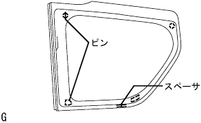

クォータ ウインドウASSY LH 取り付け |
| 1. クォータ ウインド ガラス清掃 |
ピンおよびスペーサを取りはずす。(ガラス再使用時)
 |
スクレーパーなどを使用して、残った接着剤を削り取る。(ガラス再使用時)
ガラス外周を白ガソリンで清掃する。
| 2. クォータウインドウガラス スペーサ取り付け |
スペーサおよびピン取り付け部に専用プライマーを塗布する。
|  |
図の位置にクオータウインドウガラススペーサおよびピンを取り付ける。
| 3. クォータ ウインドウASSY LH取り付け |
ボデー取り付け面清掃
 |
車両側の接着剤に著しく凹凸がある場合は、ナイフで平滑にする。
ガラス取り付け前作業
吸引ゴムをガラスに張り付ける。
ガラスをボデーに載せ、ガラス全周の幅が均一(ボデーとガラス端面の隙間が均一)になる位置にセットする。
ガラスおよびボデーパネル部にガムテープなどを貼り、ペンで取り付け時の合わせマークを付ける。(新品時)
ガラスを取りはずす。
車両側のボデー面が露出している（接着剤が残っていない）部分に専用プライマーを塗布する。
ガラス接着部に専用プライマーを図のように塗布する。
シーラントガンに接着剤をセットする。
接着剤を図のようにビード状に塗布する。
ガラス取り付け
吸引ゴムを使用し、合わせマークを一致させてガラスを取り付ける。
ガラス前面を軽く押して、完全に密着させる。
接着剤のはみ出し、不足をヘラで修正する。
接着剤が硬化するまで、保護テープなどでガラスを押えておく。
余分な接着剤は、硬化する前に取り除く。
| 4. 水漏れ点検および補修 |
接着剤硬化後、水漏れのないことを確認する。
水漏れが生じた場合は、乾燥させた後スリーセメントブラックを充てんする。
| 5. センタピラー ガーニッシュ LH取り付け |
コネクタを接続する。
 |
クリツプをかん合させセンターピラーガニツシユLHを取り付ける。
| 6. ルーフサイド ガーニッシュ INN LH取り付け |
 |
クリツプをかん合させてルーフサイドインナガーニツシユLHを取り付ける。
| 7. デッキトリムサイド パネルASSY LH取り付け |
 |
クリップおよびツメをかん合させデツキトリムサイドパネルASSY LHを取り付ける。
| 8. リヤシート3ポイントタイプ ベルトASSY OUT LH取り付け |
ボルトでリヤシート 3ポイントタイプ ベルトASSY OUT LH（フロアアンカ部）を締め付ける。
| 9. バックドアスカッフ プレート取り付け |
 |
両端上部のツメ位置を合わせ、クリツプをかん合させてバツクドアスカツフプレートを取り付ける。
| 10. スペアホイール カバーASSY取り付け |
| 11. リヤフロア カーペット取り付け |
| 12. バックドア ウエザストリップ取り付け |
 |
ウェザストリップのペイントマーク(白色および緑色、どれか1箇所)とボデー側のウェザストリップ取り付け用切り欠き部(矢印部分)を合わせ、バックドアウェザストリップを取り付ける。
| 13. リヤドア オープニングトリム ウェザストリップ LH取り付け |
ウェザストリップのペイントマーク(黄色および白色、どれか1箇所)とボデー側のウエザストリッツプ取り付け用切り欠き部(矢印部分)を合わせ、リヤドアオープニングトリムウエザストリップLHを取り付ける。

| 14. デッキサイドトリム カバー FR LH取り付け |
 |
車両後方に押し込みツメをかん合させ、デツキサイドトリムカバーFR LHを取り付ける。
| 15. フロントドアスカッフ プレート LH取り付け |
 |
フロントドアスカッフプレート LH前端部のツメを差し込む。
ツメおよびクリップををかん合させ、フロントドアスカッフプレートLHを取り付ける。
| 16. リヤシートクッションASSY取り付け |
リヤシートクッションASSY前側をリヤシート クッション ロック ストライカにロックさせる。
リヤシートベルトを、リヤシートクッションカバー & パッド後部のゴムバンドに通す。
 |
ボルトで、リヤシートヒンジLHを取り付ける。
リヤシートバックヒンジＲＨにスナップリングを取り付ける。
リヤシートヒンジRHを、リヤシートクッションASSY右側ブラケットの角パイプに挿入する。
| 17. リヤシートバックASSY LH取り付け |
ボルト2本でリヤシートバックを取り付ける。
 |
クリップ2個を取り付ける。
| 18. リヤシートバックASSY RH取り付け |
ボルト2本でリヤシートバックを取り付ける。
クリップ2個を取り付ける。
| 19. リヤシートバック ヒンジSUB-ASSY LH取り付け |
ボルトで、リヤシートバツクヒンジLHを締め付ける。
| 20. リヤシートクッションASSY取り付け |
リヤシートクッションASSY後部のフックをかん合させる。
リヤシートベルトを、リヤシートクッションカバー & パッド後部のゴムバンドに通す。
 |
リヤシートクッションASSY前部のフックをかん合させる。
| 21. リヤシートバックASSY取り付け |
ボルト2本をでリヤシートバックASSYを取り付ける。
 |
クリップ2個を取り付ける。